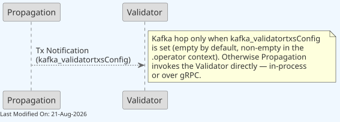
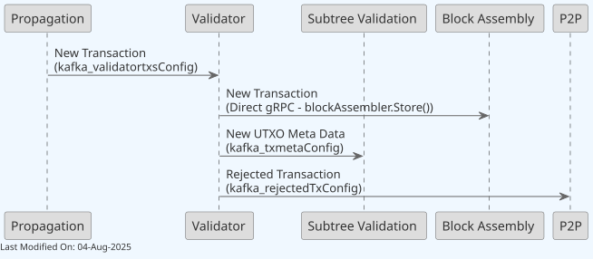
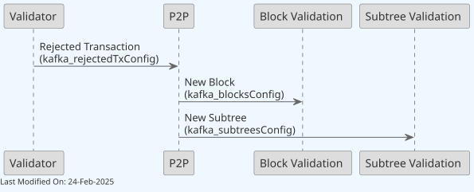
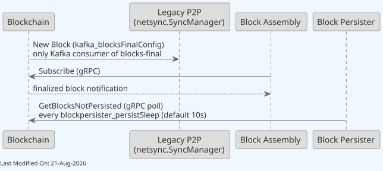

Kafka in Teranode¶
Table of Contents¶
- Description
- Use Cases
- Reliability and Recoverability
- Configuration
- Operational Guidelines
- Kafka URL Configuration Parameters
- Service-Specific Kafka Settings
- Other Resources
1. Description¶
Kafka is a high-throughput, distributed messaging system designed to store and process large volumes of data. Its key features include scalability, fault-tolerance, and high availability, making it an ideal choice for real-time data processing and analytics in complex systems like Teranode.
In the Teranode ecosystem, Kafka plays a crucial role in facilitating communication between various components, such as the Validator, BlockValidation, and Blockchain. It enables these components to exchange messages, notifications, and data reliably and efficiently, ensuring smooth operation of the entire system.
It's important to note that Kafka is a third-party dependency in Teranode. As such, there is no specific installation or configuration process provided within the Teranode framework. Users are expected to have a properly configured Kafka setup running before initiating the Teranode services. This approach allows for flexibility in Kafka configuration based on specific deployment needs and existing infrastructure.
Development Mode: Development and test contexts use in-memory Kafka by default (KAFKA_SCHEMA.dev = memory), requiring no external Kafka setup. For production-like testing with Docker Kafka, see Kafka Settings Reference.
Choosing Kafka vs. gRPC for a new path: see §6.1 Choosing gRPC vs. Kafka for a New Communication Path in the microservices overview.
2. Use Cases¶
Topic Reference Table¶
The table below enumerates every Kafka topic actually wired into Teranode's Go code (as opposed to topics that only appear in documentation). "Consumer group" is the literal value passed to NewKafkaConsumerGroupFromURL / StartKafkaControlledListener in daemon/daemon_kafka.go and services/legacy/netsync/manager.go — <client> stands for the configured ClientName. txmeta and tx-policy-rejected additionally get a random 16-character suffix appended per process (<random> in the table, added by daemon/daemon_kafka.go), so every Subtree Validation pod consumes the full stream independently instead of sharing partitions; this means the group name is not stable across restarts and lag must be monitored by topic, not by group. Retention values are the defaults shipped in settings.conf (kafka_*Config URLs); they can be overridden per-deployment via the retention query parameter. Topic names shown are the base-context defaults — in the .operator context every topic name is suffixed with the client name (blocks-${clientName}, txmeta-${clientName}, …); tx-policy-rejected has no settings.conf entry and keeps its bare name in all contexts.
| Topic (setting → default name) | Producer(s) | Consumer(s) (consumer group) | Payload | Retention (default) |
|---|---|---|---|---|
blocks (KAFKA_BLOCKS → blocks) |
P2P service | Block Validation service (blockvalidation.<client>) |
Block announcement: block hash, source URL, peer ID | 60,000 ms |
blocks-final (KAFKA_BLOCKS_FINAL → blocks-final) |
Blockchain service (after successful validation) | Legacy P2P service / netsync.SyncManager (blocksfinal.legacy.<client>) |
Block header, height, tx count, size in bytes, all subtree hashes in the block, and the full coinbase transaction — not a small notification; the producer warns when the marshalled message crosses 500 KB | 60,000 ms |
invalid-blocks (KAFKA_INVALID_BLOCKS → invalid-blocks) |
Block Validation service | P2P service (p2p.<client>) |
Block hash, failure reason, peer_id (peer that announced the block) and peer_url (DataHub URL it was fetched from). peer_id is the primary ban attribution and is immune to peer-map eviction; peer_url is resolved against registry DataHub URLs as a fallback. Both are cleared for legacy-sourced blocks, and only then does P2P fall back to its in-memory block/peer map (silently dropping with no ban score on a map miss) |
600,000 ms |
invalid-subtrees (KAFKA_INVALID_SUBTREES → invalid-subtrees) |
Subtree Validation service | P2P service (p2p.<client>) |
Subtree hash, peer URL, failure reason — used for peer quality tracking | 60,000 ms |
legacy-inv (KAFKA_LEGACY_INV → legacy-inv) |
Legacy P2P service / netsync.SyncManager |
Legacy P2P service / netsync.SyncManager (inv.legacy.<client>) — bidirectional, same service on both ends |
Peer address + Bitcoin wire inventory vectors (MSG_TX, MSG_BLOCK) |
6,000 ms |
rejectedtx (KAFKA_REJECTEDTX → rejectedtx) |
Validator service | P2P service (p2p.<client>) |
Tx hash, rejection reason, peer ID | 600,000 ms |
subtrees (KAFKA_SUBTREES → subtrees) |
P2P service | Subtree Validation service (subtreevalidation.<client>) |
Subtree hash, DataHub base URL, originating peer ID | 1,800,000 ms |
txmeta (KAFKA_TXMETA → txmeta) |
Validator service | Subtree Validation service (subtreevalidation.<client>.<random>) and Legacy P2P service (txmeta.legacy.<client>, replay disabled) |
Raw-byte batch of up to validator_txmeta_kafka_batchSize entries (default 1024), each [tx hash][ADD/DELETE action][content length][tx meta bytes]. Two layouts selected by validator_txmeta_wireFormat: v1 (default, one record per batch) and v2 (0xFF/0x02 header, per-entry xxhash prefix, one record per partition with the partition set explicitly). Not a protobuf message — KafkaTxMetaTopicMessage in the .proto is generated but unused by any producer or consumer |
60,000 ms |
validatortxs (KAFKA_VALIDATORTXS → validatortxs) |
Propagation service | Validator service (validator.<client>) |
New transaction (raw/extended tx bytes) | 60,000 ms (only when kafka_validatortxsConfig is set — empty by default, non-empty in the .operator context; otherwise Propagation invokes the Validator directly in-process — a local validator, or a gRPC client, depending on configuration) |
tx-policy-rejected (KAFKA_TX_POLICY_REJECTED → tx-policy-rejected) |
Validator service | Subtree Validation service (subtreevalidation.<client>.<random>) |
Full raw transaction bytes for txs that are consensus-valid but fail local mining policy (e.g. zero-fee) — cached but not "blessed", still fully validated on use | Not set by default (kafka_txPolicyRejectedConfig has no default URL, so the topic is disabled unless explicitly configured); recommended 10-30 min when enabled |
unittest (KAFKA_UNITTEST → unittest) |
Test code only | Test code only | Arbitrary test payloads | 600,000 ms — not used in production |
Notes on the table:
- The
blocks-finaltopic is not consumed via thegetKafkaBlocksFinalConsumerGrouphelper indaemon/daemon_kafka.go— that function exists but is commented out/unused. Its only real Kafka consumer is the Legacy P2P service. The Block Persister does not consume this topic either — it polls the Blockchain service over gRPC (GetBlocksNotPersisted) on ablockpersister_persistSleepinterval (default 10s); see the Blockchain section below. Block Assembly gets finalized-block notifications via a direct gRPC subscription (blockchainClient.Subscribe) to the Blockchain service, not Kafka. invalid-blocksandinvalid-subtreesare both produced and consumed for peer reputation/banning purposes in P2P — Block Validation and Subtree Validation are the producers, P2P is the sole consumer of each.tx-policy-rejectedwas previously undocumented; it is real and wired indaemon/daemon_kafka.go(getKafkaTxPolicyRejectedAsyncProducer/getKafkaTxPolicyRejectedConsumerGroup),services/validator/Validator.go(producer), andservices/subtreevalidation/Server.go(consumer).
Propagation Service¶
After initial sanity check tests, the propagation service endorses transactions to the validator. When kafka_validatortxsConfig is configured, this is done by publishing a transaction notification to that topic. The topic is empty in the committed settings.conf defaults and populated only in the .operator context; when it is empty, no producer and no consumer group are created and Propagation invokes the Validator directly instead. With useLocalValidator = true — also the committed default — that direct invocation is an in-process call into an embedded *Validator, not a network hop. See §6.1 Choosing gRPC vs. Kafka for a New Communication Path.
The diagram below shows the Kafka form of this handoff, i.e. the .operator configuration:

- kafka_validatortxsConfig: When set, this Kafka topic transmits new transaction notifications from the Propagation component to the Validator. Empty by default outside the
.operatorcontext.
Validator Component¶

This diagram illustrates the central role of the Validator in processing new transactions, and how it uses Kafka:
-
The Validator receives new transactions from the Propagation component via the
kafka_validatortxsConfigtopic, when that topic is configured. It is empty by default outside the.operatorcontext, in which case Propagation invokes the Validator directly (in-process under the defaultuseLocalValidator = true) and no Kafka leg exists on this hop. -
Valid transactions are forwarded to the Block Assembly component using direct gRPC calls (not Kafka). The Validator uses the
blockAssembler.Store()method for synchronous transaction processing required for mining candidate generation. -
The Validator sends new UTXO (Unspent Transaction Output) metadata to the Subtree Validation component through the
kafka_txmetaConfigtopic for inclusion in new subtrees. Should a reversal be required, the same topic is used to notify a deletion ("delete" command). -
If a transaction is rejected, the Validator notifies the P2P component via the
kafka_rejectedTxConfigtopic, allowing the network (other peers) to be informed about invalid transactions.
P2P Service¶

The P2P (Peer-to-Peer) service is responsible for peer-to-peer communication, receiving and sending data to other nodes in the network. Here's how it interacts with other components using Kafka:
-
It receives notifications about rejected transactions from the Validator through the
kafka_rejectedTxConfigtopic, allowing it to inform other nodes in the network. -
The P2P component propagates new blocks (as received from other peers in the network) to the Block Validation component via the
kafka_blocksConfigtopic, initiating the block validation process. -
New subtrees (as received from other peers in the network) are sent from the P2P component to the Subtree Validation component using the
kafka_subtreesConfigtopic, enabling efficient validation of large transaction sets.
Blockchain¶

This diagram shows the final stage of block processing:
- The Blockchain component publishes newly finalized blocks to the
kafka_blocksFinalConfigtopic (blocks-final). The Block Persister does not consume this topic — it polls the Blockchain service over gRPC (GetBlocksNotPersisted), waking everyblockpersister_persistSleep(default 10s). The real Kafka consumer ofblocks-finalis the Legacy P2P service (netsync.SyncManager), which uses it to announce new blocks to legacy (pre-libp2p) peers.
Additional Kafka Topics¶
Beyond the main processing topics described above, Teranode uses additional Kafka topics for error handling, policy handling, and legacy compatibility. See the Topic Reference Table above for the authoritative producer/consumer/payload/retention list.
Invalid Block Notifications¶
- kafka_invalid_blocks (
KAFKA_INVALID_BLOCKSin settings, topicinvalid-blocks): Used to communicate invalid blocks detected during validation- Purpose: Allows services to be notified when a block fails validation, for peer reputation management
- Producer: Block Validation service
- Consumer: P2P service (consumer group
p2p.<client>), which uses it to deprioritize/ban peers sending invalid blocks - Auto-Commit: Enabled — set in code when the consumer group is constructed (
daemon/daemon_kafka.go), not a URL parameter
Invalid Subtree Notifications¶
- kafka_invalid_subtrees (
KAFKA_INVALID_SUBTREESin settings, topicinvalid-subtrees): Used to communicate invalid subtrees detected during validation- Purpose: Allows services to be notified when a subtree fails validation, for peer quality tracking
- Producer: Subtree Validation service
- Consumer: P2P service (consumer group
p2p.<client>) - Auto-Commit: Enabled — set in code when the consumer group is constructed (
daemon/daemon_kafka.go), not a URL parameter
Policy-Rejected Transactions¶
- kafka_tx_policy_rejected (
KAFKA_TX_POLICY_REJECTEDin settings, topictx-policy-rejected): Distributes raw bytes for transactions that are consensus-valid but rejected by local mining policy (e.g. zero-fee)- Purpose: Lets Subtree Validation resolve a missing transaction referenced by a subtree from a policy-rejected cache instead of re-fetching it from the originating peer; cached transactions still undergo full validation before use
- Producer: Validator service
- Consumer: Subtree Validation service (consumer group
subtreevalidation.<client>.<random>) - Disabled by default:
kafka_txPolicyRejectedConfighas no default URL insettings.confand must be explicitly configured to activate this topic - Also gated by:
subtreevalidation_txPolicyRejectedCacheEnabled(defaulttrue) on the consumer — the consumer only starts when both the Kafka client and the cache are non-nil; on the producer side,publishPolicyRejectedTxstays silent while the FSM isCATCHINGBLOCKS, skips transactions abovevalidator_kafka_maxMessageBytes, and drops the message (non-blocking) rather than stalling validation when its producer buffer is full — all of which fall back to the ordinary HTTP fetch path on a cache miss
Legacy P2P Inventory¶
- kafka_legacy_inv (
KAFKA_LEGACY_INVin settings): Used by the Legacy P2P service for backward compatibility- Purpose: Supports inventory message propagation for legacy Bitcoin protocol compatibility
- Consumers: Legacy P2P service components
- Auto-Commit: Typically enabled for compatibility layer
3. Reliability and Recoverability¶
Kafka's role as a critical component in the Teranode system cannot be overstated. Its central position in facilitating the communication of new transactions, remote subtrees, and blocks makes it indispensable for the node's operation.
To maintain system integrity, Teranode is designed to pause operations when Kafka is in an unreliable state. This means:
- The system will not process new transactions, blocks, or subtrees until Kafka is available and functioning correctly.
- During Kafka downtime or unreliability, the node enters a safe state, preventing potential data inconsistencies or processing errors.
- Once Kafka is reported as healthy again, the node automatically resumes normal operation without manual intervention.
Consumer Resilience¶
The franz-go Kafka client handles broker disconnections, metadata refresh, and reconnection internally. Key timeout settings that control this behavior:
FetchMaxWait(configured viamaxProcessingTime, default 100ms): Broker responds within this time even with no data, preventing indefinite blocking.SessionTimeout(default 10s): Broker detects dead consumers automatically.HeartbeatInterval(default 3s): Consumer sends periodic heartbeats to the broker.RebalanceTimeout(default 60s): Maximum time for consumer group rebalancing.
Offset Out of Range Handling¶
Teranode handles offset out of range errors automatically:
- Cause: Committed offset has been deleted due to retention policies
- Detection: franz-go detects offset out of range internally
- Recovery: The
offsetResetconfiguration resets to the configured offset (typically "latest") - No Data Loss: For critical topics, longer retention periods prevent offset expiration
4. Configuration¶
For comprehensive configuration documentation including all settings, defaults, and interactions, see the Kafka Settings Reference.
TLS and Authentication¶
Teranode supports secure Kafka connections using TLS/SSL encryption and authentication. TLS configuration is applied globally to all Kafka connections.
Global TLS Settings¶
Configure TLS in settings.conf:
Certificate Configuration¶
For production deployments with TLS enabled, configure certificate paths:
# Path to CA certificate for verifying broker certificates
KAFKA_TLS_CA_FILE = /path/to/ca-cert.pem
# Path to client certificate for mutual TLS authentication
KAFKA_TLS_CERT_FILE = /path/to/client-cert.pem
# Path to client private key
KAFKA_TLS_KEY_FILE = /path/to/client-key.pem
Important: All three certificate files must be provided when using mutual TLS authentication. For server-side TLS only (broker certificate verification), only KAFKA_TLS_CA_FILE is required.
Debug Logging¶
Enable verbose Kafka client library logging for troubleshooting connection issues:
Warning: Debug logging is extremely verbose and should only be enabled for troubleshooting. Not recommended for production environments.
Configuration Example¶
Production TLS configuration:
# Enable TLS
KAFKA_ENABLE_TLS = true
KAFKA_TLS_SKIP_VERIFY = false
# Certificate paths
KAFKA_TLS_CA_FILE = /etc/teranode/certs/kafka-ca.pem
KAFKA_TLS_CERT_FILE = /etc/teranode/certs/client-cert.pem
KAFKA_TLS_KEY_FILE = /etc/teranode/certs/client-key.pem
# Kafka broker URLs. 9093 here is a conventional external TLS listener, not the
# deployment shipped in this repository — there, 9093 is pandaproxy and the broker
# listens PLAINTEXT-only on 9092. See "Trust Model and Network Isolation" below.
KAFKA_HOSTS = kafka1.example.com:9093,kafka2.example.com:9093
Development/testing configuration (skip certificate verification):
KAFKA_ENABLE_TLS = true
KAFKA_TLS_SKIP_VERIFY = true # Only for testing!
kafka_enable_debug_logging = true # For troubleshooting
Trust Model and Network Isolation¶
The manifests and compose files shipped in this repository (deploy/kubernetes/kafka/,
deploy/docker/base/) run Kafka/Redpanda with no broker ACLs, no SASL, and a plaintext
listener by default. KAFKA_ENABLE_TLS is false out of the box, so client-side mTLS
(described above) is available but not active until an operator turns it on. Nothing in the
default deployment restricts who can connect to the broker or which topics a connected
client may write to.
This means the security boundary for Kafka, as shipped, is network isolation, not authentication: any workload with network reach to the Kafka Service can publish or consume on any topic, including forging messages onto topics other services trust.
deploy/kubernetes/kafka/kafka-shared-networkpolicy.yamlrestricts ingress to the Kafka pods to same-namespace traffic only, as a default-deny boundary against workloads outside the namespace on clusters whose CNI plugin enforces NetworkPolicy. This is a real prerequisite, and it fails open silently: any apiserver accepts and stores the object regardless,kubectl get networkpolicyshows it as present either way, and a cluster whose CNI does not implement NetworkPolicy simply ignores it with no error. Verify enforcement before relying on it — the manifest carries a probe command in its header comment. The policy is also intentionally a coarse, same-namespace allowlist rather than a per-service one: there is no consistent pod-label scheme shared across every producer/consumer service and deployment style (docker-compose-derived manifests vs. the operator-managed CRs indeploy/kubernetes/teranode/) to key a tighter selector off. Treat it as a floor, not a substitute for proper multi-tenant segmentation.- For non-Kubernetes deployments,
deploy/docker/base/docker-services.ymlalready publishes the broker (9092), pandaproxy (9093) and schema registry (host9096→ container8081) bound to127.0.0.1, so they are not reachable off-host by default. Two residual gaps: any container on theteranode-networkbridge still reaches the broker directly onkafka-shared:9092, and the stacks undercompose/do not all have that loopback binding (docker-compose-ss.ymlpublishes9092/9093on all interfaces). On bare metal, restrict those ports with a firewall rule. - Not every topic carries the same trust weight if that boundary is breached. The
characterisation below covers every topic wired into the Go code, and holds only under the
default settings shipped in
settings.conf.blocks,subtrees,invalid-blocks,invalid-subtrees,rejectedtx,tx-policy-rejectedandlegacy-invcarry pointers or advisory data that downstream services re-validate or treat as unblessed input, so forged messages cannot inject data. Two qualifications: theURLfield onblocksandsubtreesis attacker-chosen and only scheme-checked (http/https, plus the literallegacy) with no restriction on the host, so produce access gives an outbound-fetch primitive from the validating pods, aimed at any host and driven at any rate the producer chooses; andlegacy-invmessages are dropped unless they name a currently connected peer, in which case they drive getdata requests for attacker-chosen hashes to that peer.txmetamessage contents are written directly into the in-memory tx-metadata cache, and a cache hit makes subtree validation treat the transaction as already known — it is never fetched or validated at all. The cachedfee,sizeInBytesand parent inpoints are then written into the subtree and subtree-meta files this node stores and serves, where they feed the block fee/reward check and the order-and-blessed check. Proof-of-work and the authoritative UTXO store still bound what can ultimately get confirmed — forgedtxmetaentries cannot forge transactions or double-spend — but the reachable surface is wider than a single skipped signature check.validatortxs(empty by default, populated in the.operatorcontext, i.e. exactly the Kubernetes deployment this NetworkPolicy targets) carries the raw transaction and the validation options applied to it —skipPolicyChecks,skipUtxoCreation,addTXToBlockAssembly,createConflicting. The Validator takes all four from the message as-is, with no check that the producer was entitled to request them, so produce access to this topic means choosing the validation mode a transaction is processed under (skipPolicyChecksmaps to consensus-mode validation, bypassing local policy). Theoptionsfield itself is optional-presence on the wire; a message that omits it falls back to the validator's own defaults (services/validator/Server.go,optionsFromKafkaMessage) — the same defaults the in-tree Propagation producer already sends — rather than crashing or silently becoming more permissive. More generally, the Kafka consumer now recovers a panic in any topic's handler instead of letting it take down the process (util/kafka/kafka_consumer.go), so a malformed message on this or any other topic is a logged, counted event, not an outage.blocks-finalis the one topic whose contents leave the node. The legacy sync manager relays each message's hash and 80-byte header to every connected legacy P2P peer without checking proof-of-work, without consulting the blockchain store, and without verifying that the header hashes to the hash in the message key. The bound on this is real: forged messages cannot get an invalid block accepted anywhere, because receiving peers still check proof-of-work and chain connectivity, and this node cannot serve a block it does not have. What they do is turn this node into a source of junk block announcements, at whatever rate the producer chooses — grounds for peer misbehaviour scoring or a ban. Treat write access totxmeta,validatortxsandblocks-finalas the topics that carry real weight.
Operators running Kafka in a shared or multi-tenant cluster, or subject to compliance requirements, should not rely on network isolation alone. On top of the NetworkPolicy:
- Enable
KAFKA_ENABLE_TLS(and provideKAFKA_TLS_CA_FILE/KAFKA_TLS_CERT_FILE/KAFKA_TLS_KEY_FILEfor mutual TLS) as documented above — the client side is wired into every producer and consumer path already, it is simply off by default. The client flag on its own is not enough. The Redpanda instance shipped here starts with--kafka-addr PLAINTEXT://0.0.0.0:9092and nothing else (deploy/kubernetes/kafka/kafka-shared-deployment.yaml,deploy/docker/base/docker-services.yml), so turning client TLS on against it breaks connectivity rather than securing anything. Enabling mTLS also requires configuring a broker TLS listener with broker certificates, and adding that listener's port tokafka-shared-networkpolicy.yaml— the policy hard-codes9092/9093/8081, so a TLS listener on a fourth port is silently blocked by it. - Configure broker-side ACLs restricting write access to the weighty topics to the identity
of their legitimate producer —
txmetaandvalidatortxsto the Validator and Propagation services respectively,blocks-finalto the Blockchain service — and, more generally, restricting produce/consume per topic to the services that need it. Teranode does not implement or configure broker ACLs itself — this is a Kafka/Redpanda broker-side configuration and certificate-distribution decision that has to be made per deployment, and is out of scope for the client library to enforce. - There is currently no SASL/SCRAM support in the Kafka client (
util/kafka/). Where broker ACLs require SASL rather than mTLS-based identity, that is a gap requiring further client work, not something enabled by an existing setting.
5. Operational Guidelines¶
Performance Tuning¶
-
Partition Optimization
- Each partition can only be consumed by one consumer in a consumer group
- Increase partitions to increase parallelism, but avoid over-partitioning
- General guideline: Start with partitions = number of consumers * 2
-
Resource Allocation
- Kafka is memory-intensive; ensure sufficient RAM
- Disk I/O is critical; use fast storage (SSDs recommended)
- Network bandwidth should be sufficient for peak message volumes
-
Producer Tuning
- Batch messages when possible by adjusting
flush_*parameters - Monitor producer queue size and adjust if messages are being dropped
- Batch messages when possible by adjusting
Reliability Considerations¶
-
Replication Factor
- Minimum recommended for production: 3
- Ensures data survives broker failures
-
Consumer Group Design
- Critical services should use dedicated consumer groups
- Monitor consumer lag to detect processing issues
-
Error Handling
- Services have different retry policies based on criticality
- Block Validation uses manual commits (
autoCommit=false); Subtree Validation'ssubtreesconsumer uses auto-commit (autoCommit=true) — see Auto-Commit Behavior by Service Criticality
Monitoring¶
Key metrics to monitor:
-
Broker Metrics
- CPU, memory, disk usage
- Network throughput
-
Topic Metrics
- Message rate
- Byte throughput
- Partition count
-
Consumer Metrics
- Consumer lag
- Processing time
- Error rate
-
Producer Metrics
- Send success rate
- Retry rate
- Queue size
6. Kafka URL Configuration Parameters¶
Note: For a comprehensive reference of all Kafka configuration parameters including advanced settings, see Kafka Settings Reference. This section provides a quick overview of the most common parameters.
Consumer Configuration Parameters¶
When configuring Kafka consumers via URL, the following query parameters are supported:
| Parameter | Type | Default | Description |
|---|---|---|---|
partitions |
int | 1 | Number of topic partitions (used when the topic is auto-created by the producer) |
replay |
int | 1 | Whether to replay messages from beginning (1=true, 0=false) |
The consumer group ID is not a URL parameter — it is passed as an argument when the consumer group is constructed in daemon/daemon_kafka.go. A group_id= query parameter in a Kafka URL is ignored.
Example Consumer URL:
Producer Configuration Parameters¶
When configuring Kafka producers via URL, the following query parameters are supported:
| Parameter | Type | Default | Description |
|---|---|---|---|
partitions |
int | 1 | Number of topic partitions to create |
replication |
int | 1 | Replication factor for topic |
retention |
string | "600000" | Message retention period (ms) |
segment_bytes |
string | "1073741824" | Segment size in bytes (1GB) |
flush_bytes |
int | varies | Flush threshold in bytes (1MB async, 1KB sync) |
flush_messages |
int | 50000 | Number of messages before flush |
flush_frequency |
string | "10s" | Time-based flush frequency |
Example Producer URL:
Advanced Consumer Parameters¶
Advanced URL parameters for fine-tuning consumer behavior and timeout configuration:
| Parameter | Type | Default | Description |
|---|---|---|---|
maxProcessingTime |
int (ms) | 100 | Max time broker waits before returning fetch results when no records are available (franz-go FetchMaxWait) |
sessionTimeout |
int (ms) | 10000 | Time broker waits for heartbeat before declaring consumer dead |
heartbeatInterval |
int (ms) | 3000 | Frequency of heartbeats sent to broker |
rebalanceTimeout |
int (ms) | 60000 | Max time for all consumers to join rebalance |
offsetReset |
string | - | Offset reset strategy: "latest", "earliest", or "" (uses replay) |
Important Constraints:
sessionTimeoutmust be >= 3 ×heartbeatInterval(validated at consumer creation for both URL-based and direct configuration)- For slow processing services (e.g., subtree validation), increase
sessionTimeoutandheartbeatIntervalto prevent the broker from declaring the consumer dead during long processing
Timeout Configuration for Slow Processing Services¶
Services that process messages slowly (e.g., subtree validation with large datasets) need increased timeouts to prevent partition abandonment:
This configuration:
- Gives 90 seconds before broker declares consumer dead (3x heartbeat interval)
- Sends heartbeats every 20 seconds, allowing up to ~60 seconds of processing between heartbeats
Offset Reset Configuration¶
Control how consumers handle offset out of range errors:
# Skip to latest on offset error (recommended for non-critical data)
kafka://localhost:9092/txmeta?offsetReset=latest
# Reprocess from earliest on offset error (for critical data recovery)
kafka://localhost:9092/blocks?offsetReset=earliest
Offset Reset Strategies:
latest: Skip to newest message (data loss acceptable)earliest: Reprocess from oldest available message (no data loss if within retention)""(empty): Usereplayparameter setting (legacy behavior)
7. Service-Specific Kafka Settings¶
Auto-Commit Behavior by Service Criticality¶
Auto-commit in Kafka is a consumer configuration that determines when and how message offsets are committed (marked as processed) back to Kafka. When auto-commit is enabled, Kafka automatically commits message offsets at regular intervals (default is every 5 seconds). When auto-commit is disabled, it is the responsibility of the application to manually commit offsets after successfully processing messages.
Kafka consumer auto-commit behavior varies by service based on processing criticality:
Auto-Commit Enabled Services¶
These services can tolerate potential message loss for performance:
-
TxMeta Cache (Subtree Validation):
autoCommit=true- Rationale: Metadata can be regenerated if lost
- Performance priority over strict delivery guarantees
-
Rejected Transactions (P2P):
autoCommit=true- Rationale: Rejection notifications are not critical for consistency
- Network efficiency prioritized
-
Subtree Notifications (Subtree Validation):
autoCommit=true(getKafkaSubtreesConsumerGroup,daemon/daemon_kafka.go)- Rationale: reprocessing a redelivered subtree announcement is harmless — the handler treats an already-validated/already-stored subtree as a benign no-op, so strict offset tracking isn't required for correctness
Auto-Commit Disabled Services¶
These services require exactly-once processing guarantees:
- Block Validation:
autoCommit=false- Rationale: Block processing affects consensus
- Manual commit prevents duplicate processing
Note: the Block Persister has no Kafka consumer at all — it polls the Blockchain service over gRPC (see §2 "Blockchain"), so auto-commit does not apply to it.
Kafka Consumer Concurrency¶
Partition count is the unit of consumer parallelism. Each service instance creates exactly one consumer group member per topic (NewKafkaConsumerGroupFromURL in util/kafka/kafka_consumer.go). Kafka assigns each partition to exactly one member of a group, so:
- The number of partitions is the hard ceiling on how many instances of a service can consume a topic in parallel. Adding instances beyond the partition count leaves the extra instances idle.
- Within one instance, the consume loop spawns a goroutine per assigned partition per fetch, so a single instance holding N partitions processes up to N partitions concurrently. Handlers run sequentially within a partition's goroutine.
- Raising
partitionsis therefore the lever for consumer throughput; there is no separate consumer-count parameter.
There is no consumer_ratio parameter. It appears in older documentation and example URLs but is not read anywhere in the code — no consumer_ratio, ConsumerRatio or consumerRatio identifier exists, and it is not picked up by the generic URL-parameter helpers (util.GetQueryParam*) that parse every recognised Kafka URL parameter. Unknown query parameters are silently ignored, so leaving it in a URL is inert rather than harmful — but it does not scale consumers.
Likewise, the service-specific *_kafkaWorkers settings (validator_kafkaWorkers, blockvalidation_kafkaWorkers, block_kafkaWorkers) are loaded into the settings structs but are not read by any consumer code path. They do not currently affect consumer concurrency either.
Service-Specific Performance Settings¶
Propagation Service Settings¶
validator_kafka_maxMessageBytes: Size threshold for routing decisions- Purpose: Determines when to use HTTP fallback vs Kafka
- Default: 1048576 (1MB)
- Usage: Large transactions routed via HTTP to avoid Kafka message size limits
Validator Service Settings¶
validator_kafkaWorkers: declared but inert- Status: The setting is defined and loaded (
settings/validator_settings.go,settings/settings.go) but no code reads it, so changing it has no effect. The same applies toblockvalidation_kafkaWorkersandblock_kafkaWorkers. - Use instead: raise the topic's
partitionsand/or run more service instances in the same consumer group — see Kafka Consumer Concurrency
- Status: The setting is defined and loaded (
Configuration Examples by Service¶
High-Throughput Service (Propagation)¶
kafka_validatortxsConfig=kafka://localhost:9092/validator-txs?partitions=8&flush_frequency=1s
validator_kafka_maxMessageBytes=1048576 # 1MB threshold
Critical Processing Service (Block Validation)¶
autoCommit is not a URL parameter and cannot be set via kafka_blocksConfig — Block Validation's consumer group is always constructed with autoCommit=false in code (daemon/daemon_kafka.go).
Metadata Service (Subtree Validation)¶
autoCommit is not a URL parameter here either — the txmeta consumer group is always constructed with autoCommit=true in code (daemon/daemon_kafka.go).
8. Other Resources¶
- Kafka Message Format
- Block Data Model: Contain lists of subtree identifiers.
- Subtree Data Model: Contain lists of transaction IDs and their Merkle root.
- Extended Transaction Data Model: Includes additional metadata to facilitate processing.